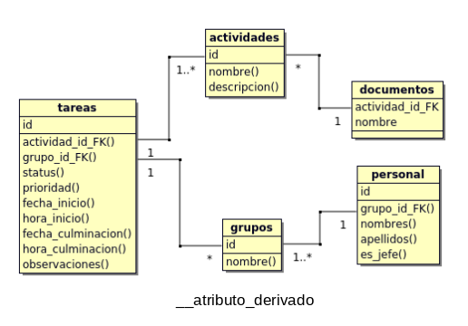
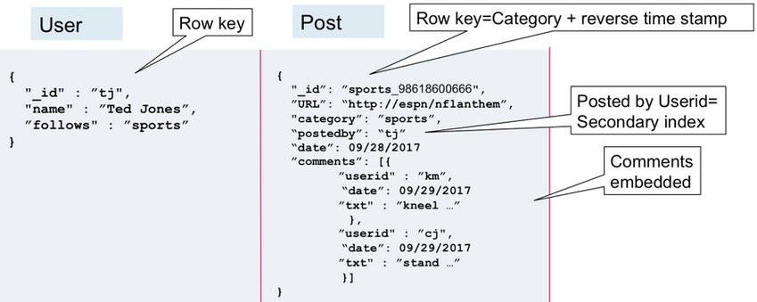
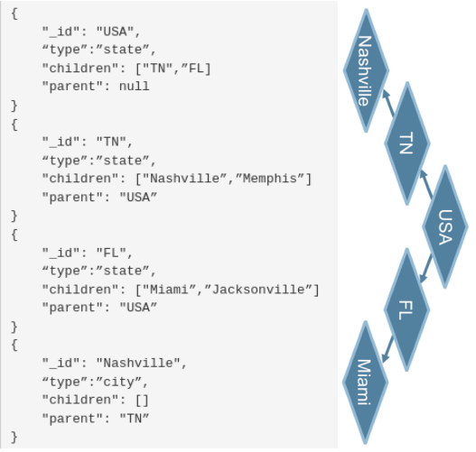
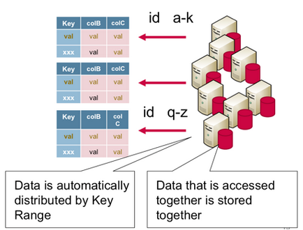
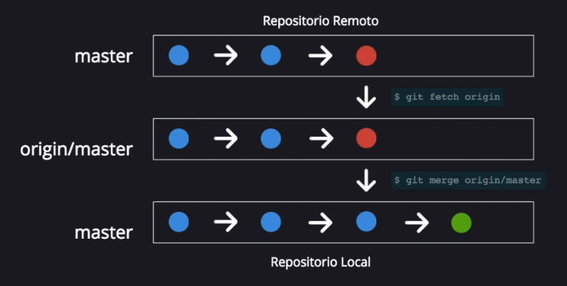
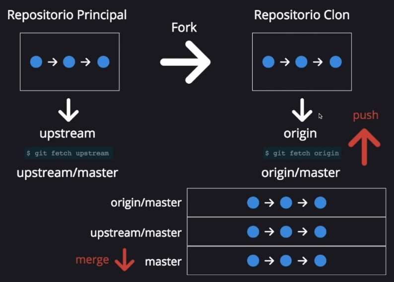
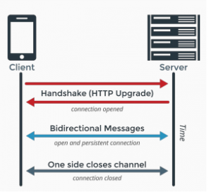

| Tecnologia | Sintaxis | Descripcion |
|---|---|---|
| VIM |
PARA LA MAYORIA DE LOS COMANDOS SE PUEDE ESPECIFICAR LA CANTIDAD DE VECES
QUE SE QUIERE EJECUTAR EL COMANDO CON NUMEROS ANTES DEL COMANDO Y LOS
CARACTERES NUEVOS DESPUES DEL COMANDO: :[num] - lleva a la linea especificada en el [num] :q! - cierra el archivo sin guardar :w - guarda el archivo sin cerrarlo :wq - guarda y cierra el archivo ESC - cambia a COMMAND MODE i - cambia a INSERT MODE en el espacio o caracter actual o - se mueve un espacio a la derecha y cambia a INSERT MODE A - se mueve al final de la linea y cambia a INSERT MODE o - inserta una linea debajo y cambia a INSERT MODE O - inserta una linea arriba y cambia a INSERT MODE C - borra toda la linea desde la posicion actual y cambia a INSERT MODE cw - change word, borra la palabra actual y cambia a INSERT MODE ct - change to, borra la linea actual hasta el [char] especificado r - replace, cambia a INSERT MODE y reemplaza el caracter actual R - cambia a INSERT MODE y reemplaza tantos caracteres como se especifiquen V - cambia a VISUAL MODE, sirve para seleccionar j - baja una o [x] posiciones k - sube una o [x] posiciones l - mueve a la derecha una o [x] posiciones h - mueve a la izquierda una o [x] posiciones % - te lleva a donde abren o cierran las llave o parentesis actuales dd - borra la linea en la que estas parado dt[char] - borra la linea hasta el [char] especificado gg - te para en la ultima linea G - te lleva a la primera linea { - sube uno o [x] bloques de codigo } - baja uno o [x] bloques de codigo u - undo, equivalente a Ctrl + z Ctrl + r - redo, hace lo contrario que undo yy - copia una linea p - pega en la siguiente linea P - pega en la linea anterior x - borra un caracter d} - borra el siguiente bloque de codigo w - te mueve al inicio de la siguiente palabra W - te lleva al siguiente espacio en la linea b - te mueve al inicio de la palabra anterior B - te lleva al espacio anterior en la linea 0w - te lleva al principio de la linea $ - te lleva al final de la linea D - borra el resto de la linea desde la posiciona actual * - cambia la siguiente ocurrencia de la seleccion actual zz - mueve la vista para que la linea actual quede en el centro ~ - toggle case, las mayusculas las pasa a minusculas y viceversa . - repite la ultima accion realizada en la posicion actual > - agrega identacion, equivalente a un tab < - quita identacion, equivalente a un tab q - inicia y termina la grabacion de una macro, te pide asignarle un tecla para poder llamarlo luego con @ |
|
| MySQL |
0.- Crear proyecto en BOUML: Menu "Project"->New; luego en el browser (con click derecho): new class view->new class diagram->new class. 1.- Definir entidades: nombre y breve descripcion de cada una. 2.- Definir relaciones: incluyendo su cardinalidad minima y maxima. * Cardinalidad minima: 0 - la entidad se relaciona de manera opcional. 1 - la entidad se relaciona de manera obligatorio. * Cardinalidad maxima: 1 - la ocurrencia puede relacionarse con solo una de la otra entidad. n - la ocurrencia puede relacionarse con varias a la vez. 3.- Definir atributos: pueden ser simples o compuestos. Se debe especificar cuales son derivados (calculados a partir de otro). 4.- Realizar el diagrama correspondiente al diseño logico * Si las entidades tienen PRIMARY KEY (PK) son llamadas "fuertes/padre" sino son llamadas "debiles/hijo". * Cada ocurrencia de una entidad debil se relaciona con una y solamente una ocurrencia de la entidad fuerte de la que depende. por esto en la entidad debil se debe crear una FOREIGN KEY (FK) enlazada a la PK de la entidad fuerte. - RELACIONES BINARIAS ENTRE ENTIDADES FUERTES: en este tipo de relaciones la tabla hija absorbe la relacion y se le asigna una FK. Segun la cardinalidad maxima de los atributos relacionados esta puede ser: * Uno a uno: la entidad hija es la que participa de manera oblogatoria, la que tiene cardinalidad minima 1. * Uno a muchos: la entidad hija es la de cardinalidad maxima 1. * Muchos a muchos: se crea una tabla intermedia para almacenar las ocurrencias de la relacion. Esta tabla contendra una FK a cada una de las tablas correspondientes a las entidades participantes, ademas de incluir los atributos de la relacion. Ninguna de las FK aceptara nulos. La PK de esta tabla seran las dos FK si la relacion no tiene atributos, o un atributo de la relacion que pueda ser PK. En las relaciones "Uno a Uno" y "Uno a Muchos" tambien es posible usar una tabla intermedia, pero no es obligatorio como en el caso "Muchos a Muchos". Esto se puede hacer para tratar de favorecer los accesos mas frecuentes y/o que requieran un tiempo de respuesta menor. 5.- Normalizacion |
WORKFLOW - CREACION DE BASE DE DATOS

Cardinalidad => (minima, maxima) Relaciones: actividades (0, *) <=> (1, 1) documentos - Una 'act' PUEDE no tener 'doc' o tener muchos - Un 'doc' DEBE estar asociado a una y solo una 'act' actividades (1, *) <=> (1, 1) tareas - Una 'act' DEBE estar asociada a una o mas 'tar' - Una 'tar' DEBE estar asociada a una y solo una 'act' grupos (0, *) <=> (1, 1) tareas - Un 'gr' PUEDE no tener 'tar' o tener muchas - Una 'tar' DEBE estar asociada a uno y solo un 'gr' grupos (1, *) <=> (1, 1) personas - Un 'gr' DEBE estar asociado a una o mas 'per' - Una 'per' DEBE estar asociada a uno y solo un 'gr' |
| MySQL |
SELECT * FROM INFORMATION_SCHEMA.KEY_COLUMN_USAGE WHERE POSITION_IN_UNIQUE_CONSTRAINT IS NOT NULL |
Muestra todas las FOREIGN KEY de la base de datos |
| MySQL | USE ['nombre_base_de_datos']; | Asigna la Base de Datos con la que se quiere trabajar |
| MySQL | DESCRIBE ['nombre_tabla']; | Muestra el nombre de los campos que conforman la tabla, su tipo de dato, si admite nulos, cuales son PRIMARY KEY o FOREIGN KEY, su valor por defualt e info extra (si es auto_increment u otros) |
| MySQL |
SHOW Databases; o SHOW Tables; |
Muestra una lista con todas las Base de Datos almacenadas en el equipo o Muestra una lista con los nombres de todas las tablas de la Base de Datos |
| MySQL | ALTER TABLE [nombre_tabla_actual] RENAME TO [nuevo_nombre]; | Cambia el nombre de una tabla |
| MySQL | ALTER TABLE [nombre_tabla] CHANGE [nombre_actual_columna] [nuevo_nombre_columna][tipo de dato][restriccion]; | Cambia el nombre de una columna |
| MySQL | ALTER TABLE [nombre_tabla] ADD CONSTRAINT [nombre_restriccion] [restriccion(columna_objetivo)]; | Agrega una restriccion a una columna |
| MySQL | NULLIF(valor1, valor2); | Si ambos valores son iguales devuelve nulo, sino devuelve el valor1 |
| MySQL |
CREATE TABLE ['nombre_tabla'] ( ['nombre_columna'] [tipo_dato] [constraint], CONSTRAINT ['nombre_pk'] PRIMARY KEY ([columna1], [columna2]), CONSTRAINT ['nombre_fk'] FOREIGN KEY ([columna1], [columna2]) REFERENCES ['nombre_tabla_ref'](['nombre_columna_ref']) [MATCH FULL | MATCH PARTIAL] ON UPDATE [accion] ON DELETE [accion] )ENGINE=InnoDB; |
Si la FOREIGN KEY esta formada por varias columnas y admite nulos se puede establecer: - MATCH FULL: todas las columnas de la FOREIGN KEY tienen valor o ninguna de ellas lo tiene. - MATCH PARTIAL: permite las FOREIGN KEY parcialmente nulas. Se pueden establecer 4 comportamientos [accion] para cada FOREIGN KEY cuando se borra o actualiza el valor referenciado, es decir, el valor original en la PRIMARY KEY: - NO ACTION o RESTRICT: produce un error, no permite borrar ni actualizar. - CASCADE: borra/actualiza las filas que hacen referencia al valor borrado/actualizado. - SET NULL: pone un nulo en las filas donde se hacia referencia al valor borrado/actualizado. - SET DEFAULT: pone el valor por defecto en la filas donde se hacia referencia al valor borrado/actualizado. |
| MySQL |
CREATE TRIGGER [nombre_trigger] [TIME] [EVENT] ON [nombre_tabla] FOR EACH ROW [NEW_STATEMENT]; |
TIME determina cuando se ejecuta la accion del trigger, puede ser: BEFORE ejecuta el trigger ANTES de la accion AFTER ejecuta el trigger DEPUES de la accion EVENT es la accion que realiza el trigger, puede ser UPDATE o DELETE o INSERT NEW_STATEMENT es la query que ejecutara el trigger. Ej: INSERT INTO, UPDATE, etc. En el NEW_STATEMENT se debe especificar si usar el valor previo o posterior al ACTION. Para ello se usan los prefijos "OLD." (valor previo) y "NEW." (valor posterior) en los nombres de los campos de la tabla de origen de los datos, ya que son los que se asignan como valores. EACH ROW o EACH STATEMENT (Averiguar que opciones hay) |
| MySQL | DROP TRIGGER ['nombre_trigger']; | Borra el trigger seleccionado. |
| PostgreSQL | sudo su - postgres | Login con el usuario postgres, que es superusuario por defecto |
| PostgreSQL | psql | Entra a la consola postgres |
| PostgreSQL | psql -U [nombre_usuario] [nombre_db] | Accede a la base de datos con el usuario especificado |
| PostgreSQL | \q | Salir de la consola |
| PostgreSQL | \h [comando] |
Muestra la ayuda DENTRO de la consola para los comandos SQL. El [comando] es opcional. Presiona "q" para salir de la ayuda. |
| PostgreSQL | \? |
Muestra la ayuda DENTRO de la conexion a la consola. El [comando] es opcional. Presiona "q" para salir de la ayuda. |
| PostgreSQL | psql --help | Muestra la ayuda FUERA de la conexion a la consola |
| PostgreSQL | \l | Muestra la lista de las bases de datos |
| PostgreSQL | \c [nombre_base_datos] |
Conecta a la base de datos especificada. Con la ayuda FUERA de la conexion a la consola se puede ver como setear las opciones de la conexion. |
| PostgreSQL | \d [nombre_tabla] |
Describe la Base de Datos. Lista de Relaciones Con el [nombre_tabla] describe la tabla especificada. |
| PostgreSQL | \du | Muestra los usuarios |
| PostgreSQL | pg_dump -U [nombre_usuario] [nombre_db] > [ruta_output].sql |
Respalda la base de datos del usuario especificado en la ruta despues del mayor que. El archivo de output debe ser .sql |
| PostgreSQL | pg_dumpall > /var/lib/pgsql/backups/dumpall.sql |
Respalda todas las bases de datos. Debes estar logueado con el superusuario postgres. (sudo su - postgres) |
| PostgreSQL |
psql -U postgres [database_name] < [ruta_archivo].sql psql -f /var/lib/pgsql/backups/dumpall.sql [database_name] |
Restaura la base de datos especificada Para el segundo comando debes estar logueado con el superusuario postgres. (sudo su - postgres) |
| PostgreSQL | pg_restore --verbose --clean --no-acl --no-owner --host=[localhost] --dbname=[db_name] --username=[username] [ruta_archivo].backup | Restaura la base de datos especificada, para el usuario y host especificados |
| PostgreSQL | \i [ruta_archivo] | Inserta un archivo .sql |
| PostgreSQL | SELECT version(); | Selecciona la version |
| PostgreSQL | CREATE USER [nombre_usuario] WITH password '[password]' | Crea un usuario para acceder a la conexion postgres |
| PostgreSQL | ALTER USER [nombre_superuser] WITH SUPERUSER CREATEDB CREATEROLE INHERIT LOGIN REPLICATION | Crea super usuario |
| PostgreSQL | ALTER DATABASE [database_name] OWNER TO [new_owner]; | Cambiar el dueño de una base de datos |
| PostgreSQL | DROP USER [nombre_usuario] | Elimina un usuario para acceder a la conexion postgres |
| PostgreSQL | ALTER USER [usertochange] WITH password '[new_passwd]'; | Resetea la contraseña de un usuario. Solo se puede hacer como administrador. |
| MongoDB noSQL |
- noSQL tiene un diseño desnormalizado (se puede duplicar data) y “query-first”
(las queries son mas relevantes que las relaciones). Esto significa que se define el esquema
segun los patrones de acceso a los datos y queries. - Es util comenzar por definir entidades, atributos y relaciones. Siempre que sea util, se pueden seguir las normas de SQL para identificar las entidades debiles. - Es importante recordar, los datos que se leen juntos se deben almacenar juntos. Por ejemplo: * Una web de post tiene las entidades 'Users', 'Posts' y 'Comments'. * En SQL, 'Comments' se relacionaria con las otras dos entidades. * En noSQL se debe decidir con cual agruparla. Para este caso se privilegia el acceso a los 'Posts', por lo que 'Comments' quedaria como su embedded object. - Si un embedded object es demasiado grande (el tamaño optimo es entre 50-100KB). Puede solo agregarse su row key y almacenarlo en su propia tabla. - Para cada documento se designa un id (row key). Se pueden crear “composite” row key con varios datos, *No se si aplica a todas las noSQL* esto puede ser util para (indexar) agrupar filas. En el ejemplo, la key es compuesta por la categoria y el timestamp. RELATIONAL TO DOCUMENT MODEL EXAMPLE  |
TREE, ADJACENCY LIST, GRAPH DATA EXAMPLE

MAPR Documentation - ROW KEY RELEVANCE  |
| MongoDB | sudo service mongod [start status stop restart] |
start: Inicia el servidor. status: Muestra informacion sobre el estado actual del servidor. stop: Detiene el servidor. restart: Reinicia el servidor. |
| MongoDB | sudo mongo | Inicia la consola (shell) de Mongo |
| MongoDB | show dbs | Muestra todas las bases de datos almacenadas en el equipo |
| MongoDB | db | Muestra la base de datos en uso actualmente |
| MongoDB | use [nombre_base_datos] | Cambia a la base de datos seleccionada. Si el [nombre_base_datos] no existe, entonces "crea" una nueva con ese nombre (solo se crea realmente cuando se le inserten datos). |
| MongoDB | db.createUser({ user: '', pwd: '', customData: {}, roles: [], authenticationRestrictions: [] }) |
Crea un usuario de la base de datos: user: nombre del nuevo usuario. pwd: contraseña del nuevo usuario. customData (opcional): informacion arbitraria que se desee agregar. roles: los roles (permisos) que tendra el usuario. Pueden ser uno o varios de estos: authenticationRestrictions (opcional): una lista IPs desde los cuales el usuario tiene permitido concetarse a la base de datos. |
| MongoDB | db.createCollection(['nombre_coleccion']) | Crea una coleccion con el nombre que se especifique |
| MongoDB | show collections | Muestra las colecciones de la base de datos |
| MongoDB | db.[nombre_coleccion].drop() | Elimina la coleccion con el nombre que se especifique |
| MongoDB | db.[nombre_coleccion].insert([{}]) |
Inserta un registro (objeto) en la coleccion que se indique Tambien se pueden insertar varios a la vez con un array de objetos Creo que si la coleccion especificada no existe la crea. |
| MongoDB | db.[nombre_coleccion].find({ modificador }) |
Es como el SELECT de SQL. Para acceder a objetos dentro de objetos se coloca la key como si se accediera desde JavaScript con dot notation. Por ejemplo: "address.city": "London" Si no se colocan argumentos devuelve todos los registros de la coleccion Los argumentos (criterio de busqueda) se colocan como key:value. Modificadores (opcionales): $or: [{}] permite colocar un array de objetos para especificar varios values (criterios) para un mismo key. key: {$gt: [numero]} greater than, permite buscar con un mayor que. key: {$lt: [numero]} less than, permite buscar con un menor que. key: {$regex: [regex]} permite buscar con Regular Expressions. |
| MongoDB | db.[nombre_coleccion].update({}, { [modificador] }, {upsert: true}) |
Actualiza los registros seleccionados de la coleccion especificada. Recibe tres argumentos -Primero: El criterio de seleccion de los datos, igual como se pondria en el metodo find(). -Segundo: El nuevo registro. Sobreescribe el objeto actual. Modificadores dentro del segundo argumento: La key $set permite modificar solo las propiedades que contenga el objeto que se le pasa como value. La key $unset permite eliminar solo las propiedades que contenga el objeto que se le pasa como value. El value del objeto que recibe $unset es boolean y se especifica con 1 o 0. La key $rename permite modificar el nombre de la key especificada. Recibe un objeto donde la key es la key actual (que se desea modificar) y el value es el nuevo nombre que se quiere dar a la key. $inc: { key: [numero] } incrementa el value de la key especificada en base al [numero]. $dec: { key: [numero] } decrementa el value de la key especificada en base al [numero]. -Tercero (opcional): permite crear un nuevo dato en caso de que el que se intenta actualizar no exista. |
MongoDB | db.[nombre_coleccion].remove({}) | Elimina los registro seleccionados de la coleccion especificada. Recibe como argumento el criterio de seleccion de los datos, igual como se pondria en el metodo find(). |
| MongoDB | .sort({ key: [1 -1] }) | Organiza la respuesta de manera ascendente (1) o descendente (-1). |
| MongoDB | .limit([numero]) | Limita la cantidad de resultados que devuelve la busqueda. |
| MongoDB | .forEach(function(doc){ print(doc.propiedad) }) | Funciona igual al metodo de JavaScript. La diferencia es el metodo print que imprime el dato seleccionado. |
| MongoDB | .count() | Cuenta la cantidad de registros que tiene la busqueda realizada. Si no la precede un .find() devuelve la cantidad total de registros en la coleccion seleccionada. |
| MongoDB | .pretty() |
Organiza el codigo de la respuesta para hacerlo mas legible. Por lo general se concatena al final de la query. |
| MongoDB | Date() | Da el date y time actual. |
| Git | git help '[nombre_comando]' | Muestra toda la documentacion relacionada |
| Git | git config --global user.name '[nombre_usuario]' | Configura el nombre del usuario |
| Git | git config --global user.email '[correo_usuario]' | Configura el correo del usuario |
| Git | git config --global color.ui true | Activa colores para los mensajes en la terminal |
| Git | git config --global --list | Muestra un listado de las configuraciones que se tienen |
| Git | git config --global [unset] alias.[alias] '[comando_original]' |
Configura un alias o shortcut: [alias] : el alias o shortcut que se va a crear. [comando_original] : el comando con todos sus flag y demas. [unset] (opcional) : elimina el alias especificado. No se pone el comando original. |
| Git | git config --global --get-regexp [regex] |
Busca todas las configuraciones que coincidan con la regex que se especifica. Por ej: si se usa 'alias' devuelve todos los alias configurados. |
| Git | git init | Comienza a monitorear los archivos de la carpeta en la que nos encontramos (la carpeta de nuestro proyecto) |
| Git | touch .gitignore | Crea el archivo gitignore |
| Git | git clone [url] [nombre_destino] |
[url] - (Requerido): URL del repositorio que deseas clonar. [nombre_destino] - (Opcional): Especifica el nombre que quieres para la carpeta en la que se recibira la copia del repositorio. Por defecto el nombre de la carpeta es el mismo que en el repositorio original. s Por ejemplo: git clone https://github.com/libgit2/libgit2 mylibgit Crea un directorio llamado 'mylibgit', inicializa un directorio .git en su interior, descarga toda la información de ese repositorio y saca una copia de trabajo de la última versión. |
| Git | git status | Muestra el estado de cada archivo dentro del repositorio |
| Git | git add -A | Agrega todos los archivos al staging area |
| Git | git commit -m '[descripcion_commit]' | Hace commit de lo que esta en el staging area |
| Git | git commit --amend -m '[descripcion_commit]' | Corrige el mensaje del ultimo commit |
| Git | git log [nombre_branch] --online --graph --decorate --since='[criterio]' | cat |
Muestra los commit que se han hecho en el branch que te encuentras. Tambien pues: [nombre_branch] : especificar la branch de la cual quieres ver los commmit. --oneline : muestra cada commit en una linea. --graph : muestra las distintas branch desde la que proviene cada commit --decorate : muestra la branch en la que origino cada commit. --since : filtra los commit que muestra. Puede ser una hora, por ej: '6am' o una fecha '1991-01-31'. | cat : imprime el resultado en la consola. No solo lo muestra en modo vista. |
| Git | git log > [nombre_archivo.txt] | Crea un archivo .txt en la carpeta raiz del repositorio con el resultado del git log |
| Git | git checkout [codigo_SHA o nombre_branch] |
Se mueve dependiendo de lo que se coloque en el area que estan los parentesis:
1.- Codigo_SHA: cambia al commit con el codigo especificado. 2.- Nombre_branch: cambia al ultimo commit de la branch. |
| Git | git reset [--soft --mixed --hard][codigo SHA] |
Descarta los commit de la branch posteriores al commit seleccionado, puede ser: --soft : borra los commit pero no toca el staging area ni el working area --mixed : borra los commit y el staging area pero no toca el working area. Es el default en caso de que se omita este primer parametro. --hard : borra TODO, los commit, el staging area y el working area. |
| Git | git branch [-a -D -m][nombre_branch] |
Sin ningun parametro, muestra las branch no ocultas que existen: -a : muestra todas las branch, incluidas las ocultas. -D : elimina la branch que se ponga en el ultimo parametro. -m : cambia el nombre de la branch. Luego de este parametro se pone el nombre actual de la rama y el nuevo nombre. nombre_branch : sin los parametros anteriores crea una branch nueva. |
| Git | git merge [nombre_branch] |
Absorbe los cambios del branch que se usa en el comando, sin eliminarla. Primero debes pararte en la branch que quieres que absorba los cambios. Para resolver un conflicto se debe ir al archivo, se modifica para que quede como lo queremos (git inserta comentarios donde hay conflictos) y luego hacemos commit. |
| Git | git rebase [nombre_branch] |
NO HACER REBASE A CONTENIDO QUE SE HAYA PUSHEADO PORQUE CAMBIA LOS HASH DE LOS COMMIT
Se recomienda hacer rebase primero parado en la branch feature (absorber los commit de master) y luego hacer rebase en master antes de hacer push. Funciona igual que merge pero en lugar de solo absorber los cambios de la rama seleccionada, si se hace parado en: - Un branch 'feature': actualiza la branch con los commit de master y pone los commit de la branch actual sobre todos los demas. - Master: absorbe los commit necesarios en master para actualizarse, los pone como ultimos commit y elimina la referencia a la branch de donde provienen. |
| Git | git cherry-pick [codigo_SHA_commit mas viejo]^..[codigo_SHA_commit mas viejo] |
Hace merge de los commit de otra branch pero los introduce en la rama actual con un nuevo commit (nuevo SHA). Puede ser un solo commit (se usa solo em primer parametro) o un rango de commits. |
| Git | git checkout -b [nombre_branch] | Crea una branch nueva y te para en ella de una vez |
| Git | git format-patch -1 [codigo_SHA] [branch_destino] -o patches |
Estando en la branch con los cambios que se quieren incluir en un parche, se selecciona: [branch_destino] : compara la branch actual con la branch especificada y genera un parche por cada commit. -1 [codigo_SHA] : genera un parche con el commit especificado. -o patches : especifica la carpeta (path relativo) en la que git guarda los archivos de los patch creados. |
| Git | git am [path_del_patch] |
Se debe estar parado en la branch que se quieren aplicar los parches. Este comando crea un nuevo commit, es decir, cambia el hash del commit original. |
| Git | git remote add origin [url_repositorio_remoto_en_github] | Vincula el repositorio remoto con el local |
| Git | git remote -v | Muestra los repositorios que estan conectados |
| Git | git remote remove origin | Elimina el vinculo entre los repositorios local y remoto |
| Git | git push origin [nombre_branch][-f] |
Sube a github el branch que se ponga en el primer parametro. El segundo parametro es opcional, fuerza a que se suba el branch seleccionado. |
| Git | git tag -a [nombre_tag] -m '[descripcion_commit]' [codigo_SHA] |
[nombre_tag] - (Requerido): Agrega un tag, normalmente un numero de version u otro distintivo. '[descripcion_commit]' - (Opcional): Agrega una descripcion (comentario) al tag. [codigo_SHA] - (Opcional): Asigna el tag a un commit. |
| Git | git push origin [nombre_tag] | Sube a github el tag seleccionado |
| Git | git push origin --tags | Sube todos los tags a github |
| Git |
git fetch origin Baja los cambios del repositorio remoto a la branch oculta (origin/master) Luego se puede: Hacer merge desde la branch que usaremos en el repositorio local. Hacer push para subir cambios al repositorio remoto. |
WORKFLOW - PROYECTOS EN EQUIPO  |
| Git |
Para colaborar en un proyecto de un tercero se debe hacer Fork en GitHub.
Esto clona el repositorio a nuestra cuenta. Esta copia en nuestra cuenta es la que vamos a poder modificar. Una vez en este punto tendremos dos branch ocultas: - Una para hacer fetch a la copia en nuestra cuenta (origin/master), tal cual como en el workflow en equipo. - Una para hacer fetch (upstream/master) al proyecto original, para obtener una copia actualizada. Una vez hechos los cambios que se desean proponer se suben al repositorio propio (el clon) y desde ahi se hace un Pull Request. Por ultimo el dueño del proyecto puede, o no, hacer merge de los cambios propuestos. |
WORKFLOW - PROYECTOS DE TERCEROS  |
| Git | ssh-keygen | Genera la clave SSH (publica y privada) |
| Git | git stash [save 'mensaje_descriptivo'] [list][apply][drop][show] [stash] |
Guarda los cambios que del staging area en el 'stash' y los oculta. Opciones: save 'mensaje_descriptivo': el mensaje es opcional pero ayuda a identificar el stash cuando se listan. pop : aplica el ultimo stash guardado y lo saca de la lista list : muestra los stash guardados. apply : aplica el ultimo stash sin borrarlo. drop : borra toda la lista de stash. show : muestra el detalle de los cambios del stash seleccionado. stash : el identidicador de cada stash, su formato es stash@\{0\} |
| LARAVEL Migration |
Schema::create('carts', function (Blueprint $table) { $table->bigIncrements('id'); $table->string('name')->default('Luis'); $table->integer('age')->nullable(); $table->unsignedBigInteger('user_id'); $table->foreign('user_id') ->references('id')->on('users') ->onDelete('cascade'); $table->timestamps(); }); |
Modelo basico de migracion (falta determinar si se va a usar integridad referencial o no) |
| Socket.io | El handshake inicia se da con una peticion HTTP y al recibir confirmacion del servidor se inicia la conexion con los sockets y se cambia al protocolo WS que mantiene una conexion en vivo apoyado en el protocolo de red TCP. Esta conexion tambien permite que ambos lados (cliente y servidor) emitan eventos. | FUNCIONAMIENTO WEB SOCKETS  |